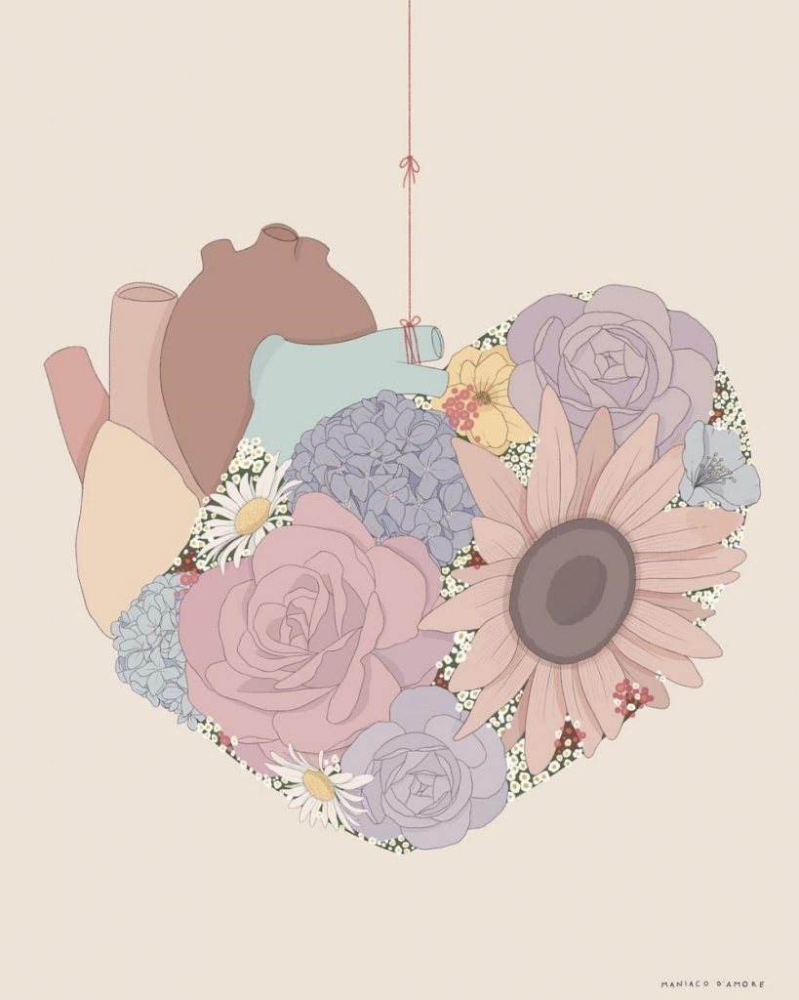

2023-02-12
Love Letter at fall-in-love day
চিঠিMy dearest Better Half,
On this very special day, I want to celebrate the most romantic occasions with you. Today marks our fall-in-love day since 2013. And this is in the first time after our beautiful wedding, I am filled with so much love and gratitude for you.
As we celebrate, I want you to know that every caress from you is like a ray of sunshine in my life. Your touch brings happiness and comfort to my soul, and I am forever grateful to have you by my side.
As we embrace this joyous occasion at Bengali traditional Pohela Falgun, I want you to know that my love for you will only continue to blossom, like the vibrant flowers that bloom in this beautiful season.
Despite all the daily chaos, let's put everything aside. You are my everything, my love, and I am so thankful to have you as my wife. Happy Love day, and Falguni Shuveccha, my dear.
With all my love,
Your beloved half
12:00 AM, 13 February 2023
